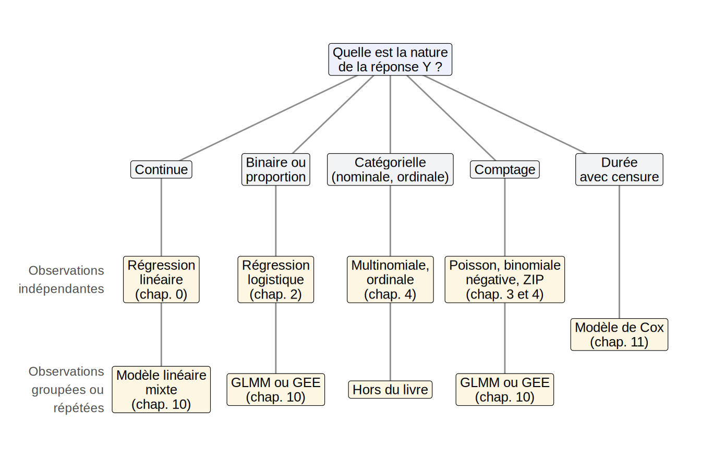

Warning: The `label.size` argument of `geom_label()` is deprecated as of ggplot2 3.5.0.
ℹ Please use the `linewidth` argument instead.
Les chapitres précédents ont présenté une famille cohérente de modèles de régression : le modèle linéaire, les GLM (Chapitre 3) et leurs extensions aux réponses catégorielles et aux comptes avec excès de zéros (Chapitre 4), leurs versions pénalisées (Chapitre 6), non paramétriques (Chapitre 7, Chapitre 8) ou additives (Chapitre 9), et enfin les modèles pour données corrélées (Chapitre 10). Dans tous ces modèles, seule l’espérance de la réponse (ou une fonction de celle-ci) dépend des variables explicatives. Ce chapitre présente brièvement quelques modèles classiques qui relâchent cette hypothèse, ainsi qu’un type de réponse que le livre n’a pas couvert, les durées de vie. Je donne seulement l’idée générale de chacun et sa formulation mathématique la plus simple, même si chacun mériterait un cours à lui seul.
Définition — GAMLSS
Dans un GLM ou un GAM, seule l’espérance dépend des variables explicatives : la dispersion \(\phi\) est constante. Les modèles additifs généralisés pour la position, l’échelle et la forme (GAMLSS) laissent chaque paramètre de la loi de \(Y_i\) dépendre de ses propres covariables. Pour une loi \(\mathcal D(\mu,\sigma,\nu,\kappa)\) à quatre paramètres (position, échelle, asymétrie, aplatissement), on pose
\[ Y_i \sim \mathcal D(\mu_i,\sigma_i,\nu_i,\kappa_i), \qquad g_k(\theta_{ki}) = \boldsymbol x_{ki}^\top\boldsymbol\beta_k + \sum_{j} f_{kj}(x_{kji}), \quad k = 1,\ldots,4, \]
où \(\theta_{1i} = \mu_i\), \(\theta_{2i} = \sigma_i\), \(\theta_{3i} = \nu_i\), \(\theta_{4i} = \kappa_i\), chaque \(g_k\) est une fonction de lien et les \(f_{kj}\) sont des fonctions lisses comme dans un GAM.
Le cas le plus simple est le modèle normal hétéroscédastique
\[ Y_i \sim \mathcal N(\mu_i,\sigma_i^2), \qquad \mu_i = \boldsymbol x_i^\top\boldsymbol\beta, \qquad \log\sigma_i = \boldsymbol z_i^\top\boldsymbol\gamma. \]
Remarque — Une famille très large
La loi \(\mathcal D\) n’est plus restreinte à la famille exponentielle, et la librairie gamlss propose plus d’une centaine de lois (continues, discrètes, mixtes, tronquées, avec excès de zéros). Le GLM et le GAM sont des cas particuliers où seul \(\mu\) est modélisé. Ce cadre est utile pour construire des courbes de référence, comme les courbes de centiles de croissance, où la variabilité et l’asymétrie changent avec l’âge.
Définition — Régression quantile
Plutôt que l’espérance, on modélise le quantile d’ordre \(\tau \in (0,1)\) de la réponse :
\[ Q_\tau(Y_i\mid \boldsymbol x_i) = \boldsymbol x_i^\top\boldsymbol\beta(\tau). \]
L’estimateur \(\hb(\tau)\) minimise
\[ \sum_{i=1}^n \rho_\tau\!\left(y_i - \boldsymbol x_i^\top\boldsymbol\beta\right), \qquad \rho_\tau(u) = u\,\{\tau - \mathbf{1}(u<0)\}, \]
où \(\rho_\tau\) est la fonction de perte quantile (check function, aussi appelée perte pinball). Le cas \(\tau = 1/2\) correspond à la régression médiane, qui minimise la somme des valeurs absolues des résidus.
Remarque — Pourquoi les quantiles ?
La régression quantile ne fait aucune hypothèse de loi ni d’homoscédasticité. Sa perte est linéaire dans le résidu plutôt que quadratique, ce qui limite l’influence des grands résidus en \(Y\) par rapport aux moindres carrés. Elle n’est pas robuste pour autant au sens du Chapitre 12 : les points à fort levier (atypiques en \(\boldsymbol x\)) peuvent toujours être très influents, et sa fonction d’influence n’est pas bornée. Ajuster le modèle pour plusieurs valeurs de \(\tau\) donne une description beaucoup plus complète de la loi conditionnelle que la seule espérance, ce qui permet de détecter des effets qui diffèrent selon la queue de la distribution. Par exemple, une variable peut influencer les hauts salaires sans toucher les bas salaires. Le problème de minimisation est un programme linéaire, résolu en R par rq de la librairie quantreg.
Définition — Modèle à risques proportionnels de Cox
Soit \(T_i\) le temps jusqu’à un événement (décès, panne, rechute). Sa fonction de risque \(h(t\mid\boldsymbol x_i)\) est le taux instantané d’occurrence au temps \(t\), sachant que l’événement n’a pas encore eu lieu. Le modèle de Cox pose
\[ h(t\mid\boldsymbol x_i) = h_0(t)\exp\!\left(\boldsymbol x_i^\top\boldsymbol\beta\right), \]
où \(h_0(t)\) est un risque de base commun, laissé entièrement non spécifié. Le rapport des risques de deux individus, \(\exp\{(\boldsymbol x_i - \boldsymbol x_j)^\top\boldsymbol\beta\}\), ne dépend pas de \(t\), d’où le nom de risques proportionnels.
Remarque — Censure et vraisemblance partielle
La particularité des données de survie est la censure : pour certains individus, on sait seulement que \(T_i\) dépasse la durée observée. Le modèle de Cox traite la censure naturellement et estime \(\boldsymbol\beta\) sans jamais estimer \(h_0\), en maximisant la vraisemblance partielle
\[ L_P(\boldsymbol\beta) = \prod_{i\,:\,\delta_i = 1}\frac{\exp(\boldsymbol x_i^\top\boldsymbol\beta)}{\sum_{j \in \mathcal R(t_i)}\exp(\boldsymbol x_j^\top\boldsymbol\beta)}, \]
où \(t_i = \min(T_i, C_i)\) est la durée observée (\(C_i\) : temps de censure), \(\delta_i = 1\) si l’événement a été observé et \(\mathcal R(t_i)\) est l’ensemble des individus encore à risque juste avant \(t_i\). En R, la fonction est coxph de la librairie survival. Il existe aussi des modèles paramétriques où la loi de \(T_i\) est entièrement spécifiée (Weibull, log-normale), ajustés par survreg de survival.
Chacun des modèles de ce chapitre a son ouvrage de référence : Stasinopoulos et al. (2017) pour les GAMLSS, Koenker (2005) pour la régression quantile et Therneau et Grambsch (2000) pour le modèle de Cox. Les références complémentaires donnent des lectures pour les chapitres du livre.
La Figure 11.1 donne un premier repère pour choisir un modèle selon la nature de la réponse et la structure des observations. Le tableau qui suit la complète.
Warning: The `label.size` argument of `geom_label()` is deprecated as of ggplot2 3.5.0.
ℹ Please use the `linewidth` argument instead.
Quelle que soit la branche, quatre questions s’ajoutent :
Le tableau suivant récapitule les modèles vus dans ce livre et ceux présentés dans ce chapitre, en donnant pour chacun le type de réponse traité et les applications typiques. Les trois derniers ne sont présentés que dans ce chapitre.
| Modèle | Réponse | Idée clé | Applications typiques | Fonction R |
|---|---|---|---|---|
| Régression linéaire | Continue | \(E[Y] = \boldsymbol x^\top\boldsymbol\beta\), erreurs normales homoscédastiques | Relations approximativement linéaires : prix, rendements, mesures physiques | lm |
| Régression logistique | Binaire | \(\text{logit}\,P(Y=1) = \boldsymbol x^\top\boldsymbol\beta\) | Diagnostic, défaut de paiement, succès/échec, classification à deux classes | glm(family = binomial) |
| Régression de Poisson | Comptage | \(\log E[Y] = \boldsymbol x^\top\boldsymbol\beta\), avec offset pour l’exposition | Nombre d’accidents, de réclamations, de cas d’une maladie ; taux d’incidence | glm(family = poisson) |
| Quasi-Poisson, binomiale négative | Comptage surdispersé | Variance supérieure à la moyenne (Section 3.6.5) | Mêmes applications que Poisson quand la variabilité est trop grande | glm(family = quasipoisson), MASS::glm.nb |
| GLM gamma, inverse gaussienne | Continue positive asymétrique | Variance croissant avec la moyenne | Montants de sinistres, durées, coûts, concentrations | glm(family = Gamma), glm(family = inverse.gaussian) |
| Régression multinomiale | Catégorielle nominale | Logit de chaque catégorie contre une référence | Choix de produit, de mode de transport, classification à plusieurs classes | nnet::multinom |
| Régression ordinale | Catégorielle ordonnée | Logits cumulatifs à cotes proportionnelles | Échelles de Likert, stades d’une maladie, niveaux de satisfaction | MASS::polr, ordinal::clm |
| ZIP, modèle à barrière | Comptage avec excès de zéros | Mélange d’un zéro structurel et d’un modèle de comptage | Nombre de visites, de consommations, d’espèces observées | pscl::zeroinfl, pscl::hurdle |
| Ridge, lasso | Toute réponse d’un GLM | Pénalisation de \(\boldsymbol\beta\) pour réduire la variance | Nombreuses variables explicatives, colinéarité, sélection automatique de variables | glmnet::glmnet |
| \(k\) plus proches voisins | Continue ou catégorielle | Moyenne locale des \(k\) voisins | Prédiction sans forme fonctionnelle, peu de variables explicatives | class::knn, FNN::knn.reg |
| Estimateur à noyau | Continue | Moyenne pondérée localement par un noyau | Lissage d’une relation univariée ou bivariée | KernSmooth::locpoly, ksmooth |
| Splines | Continue ou GLM | Polynômes par morceaux raccordés aux nœuds | Effet non linéaire d’une variable (âge, dose, temps) dans un modèle paramétrique | splines::bs, splines::ns, smooth.spline |
| GAM | Toute réponse d’un GLM | \(g(E[Y]) = \alpha + \sum_j f_j(x_j)\) | Plusieurs effets non linéaires additifs, exploration de la forme des effets | mgcv::gam |
| Modèle linéaire mixte | Continue, données groupées | Effets aléatoires par groupe | Mesures répétées, données longitudinales, élèves dans des écoles | lme4::lmer |
| GLMM | GLM, données groupées | Effets aléatoires dans le prédicteur linéaire | Réponses binaires ou de comptage répétées par sujet ; interprétation sujet-spécifique | lme4::glmer |
| GEE | GLM, données groupées | Moyenne marginale et corrélation de travail | Essais cliniques, enquêtes longitudinales ; interprétation populationnelle | geepack::geeglm |
| GAMLSS | Toute loi, continue ou discrète | Covariables dans chaque paramètre de la loi | Hétéroscédasticité, courbes de centiles, lois hors famille exponentielle | gamlss::gamlss |
| Régression quantile | Continue | \(Q_\tau(Y) = \boldsymbol x^\top\boldsymbol\beta(\tau)\) | Salaires, données hétéroscédastiques ou avec valeurs aberrantes, queues de distribution | quantreg::rq |
| Modèle de Cox | Durée, avec censure | Risques proportionnels, risque de base non spécifié | Survie de patients, fiabilité, attrition de clients | survival::coxph |
Remarque — À retenir
gamlss). Le cas le plus simple est le modèle normal hétéroscédastique, avec \(\log\sigma_i = \boldsymbol{z}_i^\top\boldsymbol{\gamma}\) ;rq de quantreg (\(\tau = 1/2\) donne la régression médiane). Elle ne suppose ni loi ni homoscédasticité et limite l’influence des grands résidus en \(Y\), mais elle n’est pas robuste aux points à fort levier ;coxph de survival).